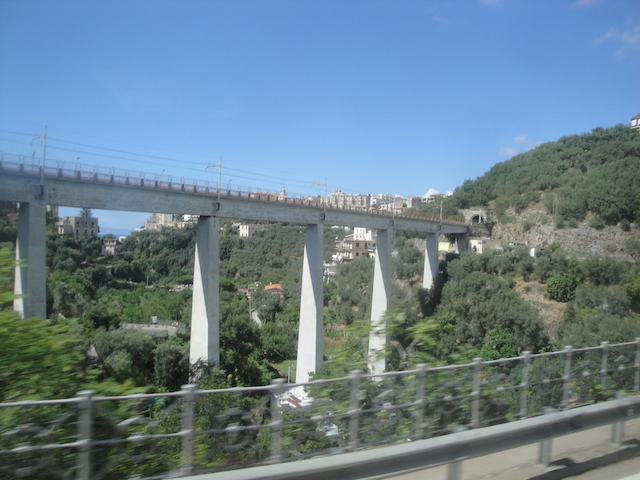
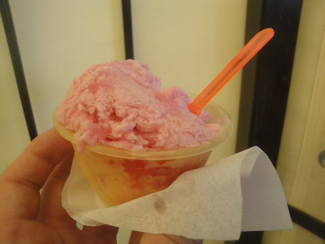
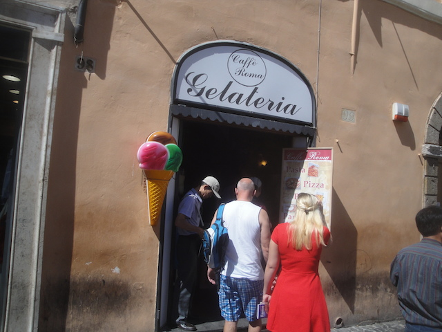
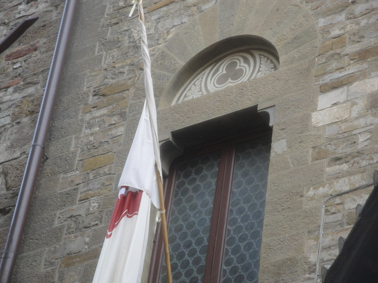

| |
Disney Magic Cruise 2015
Spain Italy France
Well, we're here at our first port stop. Time to hop off the ship (I see you Aqua Dunk).
We made it to Naples, Italy. Hi Patrick. How's it going? =)
Well, after spending the past two days on a ship, the first thing we want to do after naturally getting off the ship is get onto a much smaller boat.
Bye Naples. It was nice being in your town for 5 minutes.
Yay!! We made it to the island of Capri! =)
First order of buisness while here, check out August's Gardens.
Hope none of you guys have a problem with stairs.
Holy Sh*t!! Love the view from up here. Cliff Jump!!
Artsy shot of the flower (Hey, some random person did call me artsy).
It really is a beautiful garden.
Ooh. Look at the pretty artwork.
Another day. Another funicular.
I know I mentioned it before and I'll say it again. These pharmacies just SCREAM "MEDICAL MARIJUANA STORE!!!!" to me. I can't undo that connection.
Limoncello and Liola Crema are the two popular liquors in this part of Italy and we got a free shot of each. It's good and all, but I will warn you. These things are STRONG and have a HIGH alcohol percentage. So be warned. It burns going down.
Please don't drive your car into the ocean like a suicidal maniac.
"Aww. No more meals from Remy. How sad." =(
"Hey tourists! We have stuff! Please give us money!"
Must buy fancy wood work for some reason.
You have no idea how happy eating authentic 4 Cheese Pizza in Italy with European Fanta makes me. =)
 Just wandering around Sorrento.
Just wandering around Sorrento.
Nice view of the mountain you have over there.
Keeping my fingers crossed that 2015 isn't a repeat of 79 AD.

Ooh. Look at the pretty bridge.
Another random castle we just happened to drive past.
"Please hand over all your Euros."

Hey! I'm in Italy! You know what that means!? ITALIAN GELATO!!! =)
You know what? Let's all go and check out a city destroyed by molten lava. Yeah, that sounds like a good idea.
♫But if you close your eyes, Does it almost feel like nothings changed at all?♫
A big old mass grave.
If you're feeling sad, just remember that this person was most likely an asshole.
Even in the ancient city of Pompeii, they had water fountains. Come on Northern Europe! Get your act together on this!
It's just a really cool place to walk around.
Apparently, this was sort of the ancient version of Fast Food. Guess McDonalds isn't so special after all.
Ooh. More pretty artwork from the Disney Ship.
All right. Time for the final resteraunt on our dining rotation, Animator's Pallate.
I just LOVE the theme and atmosphere of this resteraunt.
If I was judging all the resteraunts I've been to solely on the atmosphere, and experience, and not including food (Don't get me wrong. The food was really good. There's just better), Animator's Pallate would easily be in the Top 5.
Hey, it's a really good appetizer.
This Baked Potato or Mac and Cheese Soup...I forget exactly which it was. All I know is that it's REALLY good. Screw the fact that it's an immature food that popular with kids. I don't give a f*ck. I love it.
And hey. The pasta they had was really good.
At the end of dinner, they had Fantasia Mickey come out after a show on the screen and the waiters and waitresses followed him and celebrated. Hey, fine with me. =)
Fun fact about this dessert. I ordered this "Make Your Own Pie" dessert, and was warned by the waiter that it wasn't really good and that I should try something else. But I figured "F*ck it. I like most things. I'm sure it'll be fine". Got it, and...I wasn't a fan of it. So take it from me, if your waiter/waitress recommends something else, take their advice. They know what they're talking about. =)
After dinner, I went and saw the "Twice Charmed Show". I saw the begenning, but fell asleep during the middle, waking up to And They Lived Happily Ever After again. Dammit!! Oh well.
Aww. How cute. A little towel bear.
Another day. Another port in Italy.
Yep. We're in Rome. I had actually been to Rome before and I absolutely loved the city. So I was more than happy to go back here again, and see a new side of the city.
If your mind is as dirty as mine, then you're seeing what I'm seeing. =)
Love just how pretty and elaborate the water fountains are in Rome.
If you love coffee, then this is a nice little cafe to stop in.
In a repeat of 2012, we went and stopped at the Pantheon again.
Yes. It's still very nice looking 3 years later.
If you see a water fountain in Rome, drink up. They're sadly not nearly as common in the rest of Europe (particuarlly Northern Europe).
Is there a reward for turning in Copyright Infringement cases to Disney? =)
We're back at the Trevi Fountain, and sadly, it's all dried up for rennovations. Well, at least I got to see it full last time.
But don't worry. There may not be any water, but you can still waste your money here.
So many wasted Euros.

Yeah. We're in Rome. We HAVE to get some Gelato. We HAVE to.
Best Ice Cream ever. Not joking.
You know what really makes it feel like stepping back in time? That sneakers ad. =)
Oh look. We're back at the Spanish Steps. And unlike last time, I'm actually climbing up.
It's nice and all, just look out for people pulling the Friendship Bracelet Scam. While I wish I was more rude to the scammer and called it a scam to his face, I am happy to report that I didn't give him a single Euro. =)
Time for lunch at a little hole in the wall place.
This may not be sterotypical Italian, but they recommended their beef, and it was good. Not complaining. =)
Hey David. How's it going?
Hey look. It's that really fancy McDonalds with the Gelato that they showcased on the Most Unusual McDonalds. Cool.
Yep. I'm back in the Vatican, and now there's a new pope. Does he seem like a nice guy? Yes. Is he an improvement from the old pope? F*CK YEAH!!! Is he perfect? No. Does he change the fact that I'm a staunch atheist? Nope.
This time, I actually spent more than 5 minutes in this itty bitty little theocracy. Even saw the Sistene Chapel since I might as well while we're here.
RAINBOW!!! RAINBOW!!! MAGICLAND!!! =)
All right. Time for another dinner on the ship. And I'm sorry, but I didn't like this appetizer. It's duck something, but I forget what part of the duck, All I know is that I didn't like it.
Ahh. That Black Bean Soup washed it all away.
This steak was really good, and apparently everyone else wished that they ordered it instead of whatever chicken/fish/turkey everyone else ordered cause they vowed to always order what I got afterwards and even called me a foodie. I'm flattered, but I would not call myself a foodie. I'm lots of crazy, weird, and random things, but a foodie isn't one of them. Granted, I do love food and all. Eating is awesome. But if I tried to pass as a foodie, a real foodie would kick my ass.
Stop having so many good desserts!!
And hey, I kept hearing from people to get the Mickey Bar on the ship. So hey. I did. And it's good.
Tonight's show was Villians Tonight. Now, I actually knew about this show in advance, and was looking foreward to seeing it. Cause I LOVE the Disney Villians, absolutely adore them. So this show was screaming my name. Yeah, it's silly. It's stupid. It's cheesy. But I liked it and was glad that I saw it.
Ooh. I like the towel dinosaur. Very creative.
Ah crap. We've got some rain. That's not gonna stop us from going on today's Port Adventure.
Someday, a hard-core credit whore will venture out to this place because they decided to add a Wacky Worm.
All right. We made it to Florence. Home of this famous church.

I spy a hidden mickey. =)
"What!? David doesn't have any pants!? I'm so offended!!!"
Hey. Florence is just a really beautiful city. I love walking around here.
Another famous church and more prettiness from Rennisance Artists.
Please don't remind me of Missouri. Unless I'm going back to Branson for Silver Dollar City, I don't care to step foot in that state again.
Mmm. Authentic Italian Pizza. *drool*
Just sitting on the steps of Florence with some Italian Gelato. Sounds like a good day to me.
 All right. We're here in Pisa, and there's only one reason to stop over here (Sorry rest of Pisa).
All right. We're here in Pisa, and there's only one reason to stop over here (Sorry rest of Pisa).
Ahh. Standard tourist photo.
It's a tower, and it leans. Very pretty. Moving on.
Push. =)
Leaning tower of Fanta!
Hey look! Gardaland. I enjoyed my vist last time and I still have to go back for that new Dive Coaster.
I think there's some sort of law that states every place in Italy must be pretty. Been twice and to lots of different parts, and I loved every inch of the country.
 Back on the ship for another great dinner. And hey, the French Onion Soup was absolutely fantastic.
Back on the ship for another great dinner. And hey, the French Onion Soup was absolutely fantastic.
As the official foodie of our table, I must say. The lamb chops were indeed quite tasty and well cooked.
Creme Brule is f*cking awesome. I just wish it was more popular in the U.S.
France
Home
|
{kind=link}